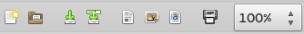
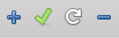
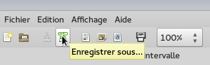

Utiliser les infos bulles
L'interface graphique vista permet d'obtenir de l'aide sur les boutons en positionnant la souris dessus. Une info-bulle apparaît.
Les boutons de la barre d'outils permettent d'accéder directement aux fonctionnalitées proposées par la barre de menus (cf § La barre de menus). Utiliser les infos bulles pour voir à quoi correspondent les boutons.
